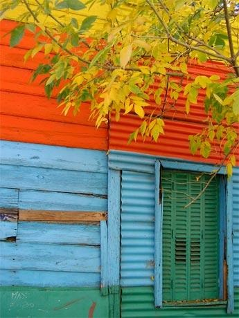
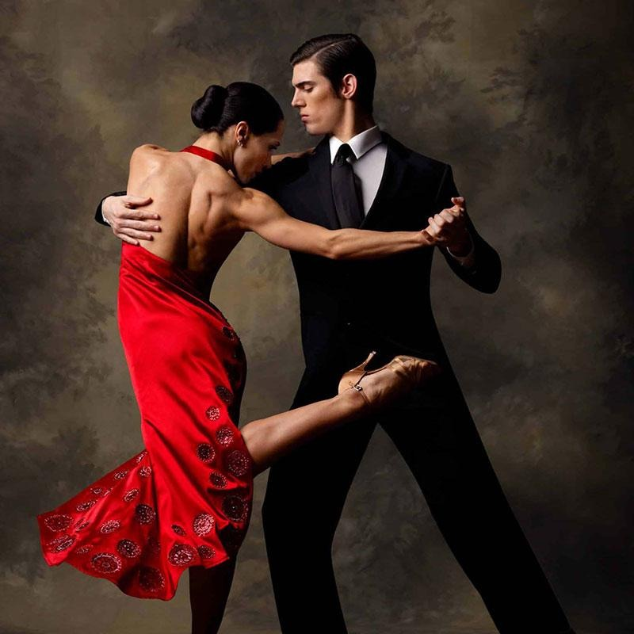
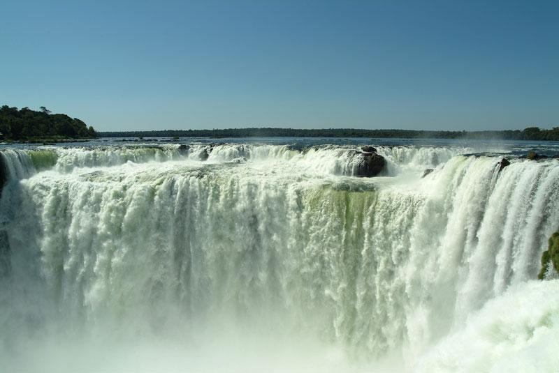
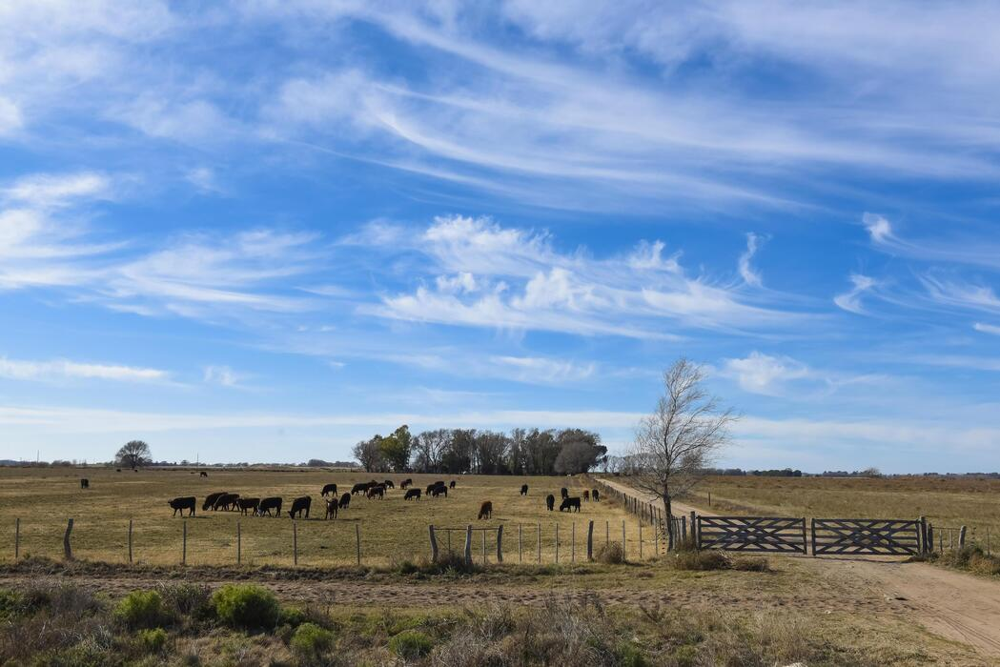
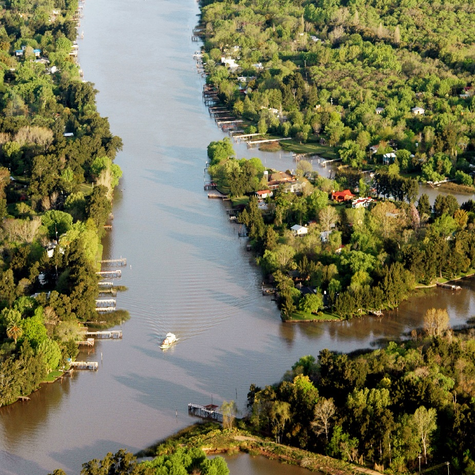
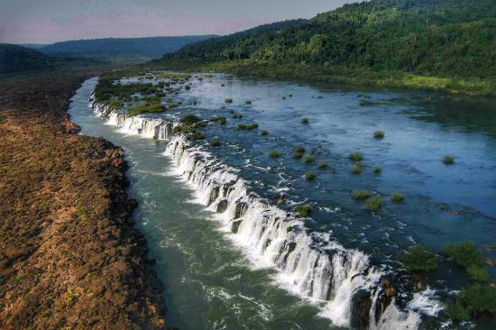

Idée voyage en petit groupe · 20 jours / 18 nuits
Argentine · Ville & Nature en Mouvement
Buenos Aires, Tango & Chutes d'Iguazu
Demander un devis gratuit20 jours au cœur de l'Argentine
Plongez dans l'effervescence de Buenos Aires, capitale cosmopolite où chaque quartier raconte une histoire. Flânez dans les ruelles colorées de La Boca, admirez l'élégance de Recoleta, et laissez-vous envoûter par le tango. À seulement quelques heures, les Chutes d'Iguazú vous offriront des panoramas à couper le souffle au cœur de la jungle de Misiones. Ce circuit marie culture urbaine, traditions rurales et décors naturels spectaculaires pour une immersion complète en Argentine.
Le voyage en un coup d'œil

🏛️ Buenos Aires
- Quartiers emblématiques : La Boca, Recoleta, San Telmo
- Tango, gastronomie et vie nocturne
- Delta du Tigre et Pampa
- Obélisque et avenues historiques

💃 Immersion tango
- Initiation de 2 heures avec professeur
- Dîner-spectacle dans un lieu mythique
- Ambiance des milongas traditionnelles
- Mélancolie et passion du bandoneón

🌊 Les Chutes d'Iguazu
- Garganta del Diablo (700m x 150m)
- Passerelles surplombant les chutes
- Brume rafraîchissante et rugissement des eaux
- Spectacle naturel impressionnant

🐎 La Pampa
- Immersion dans la campagne argentine
- Terre des gauchos et des estancias
- Asado authentique sous les ombrages
- Paysages à perte de vue

🌿 Delta du Tigre
- Journée aquatique au nord de Buenos Aires
- Navigation entre les îles
- Maisons sur pilotis et végétation luxuriante
- Calme absolu à 1h de la capitale

🏞️ Misiones
- Saltos del Moconá (cascades de 15m)
- Missions jésuites classées UNESCO
- Jungle tropicale et nature
- Patrimoine colonial exceptionnel
L'asado, rituel national argentin
Plus qu'un barbecue, l'asado est un moment de partage et de convivialité. Viandes cuites lentement sur la braise, accompagnées de salades, de pain et de bons vins.
Votre itinéraire jour par jour
1ère semaine : Buenos Aires
Arrivée à Buenos Aires
Installation à l'hôtel ★★★ au Microcentro. Première immersion dans la culture argentine : découverte des quartiers emblématiques (La Boca, Recoleta, San Telmo, Puerto Madero). Initiation au tango argentin (2h) et dîner-spectacle dans un établissement mythique.
Exploration de la capitale
Visite approfondie des quartiers : Plaza de Mayo, Casa Rosada, Cimetière de la Recoleta, librairie El Ateneo. Découverte du charme colonial de San Telmo et de l'élégance de Palermo.
Delta du Tigre
Journée aquatique au nord de Buenos Aires. Navigation en bateau-bus entre les îles du Delta, découverte des maisons sur pilotis et de la végétation luxuriante. Une parenthèse de fraîcheur et de calme absolu.
La Pampa argentine
Immersion dans la campagne argentine, terre des gauchos et des estancias. Découverte des traditions rurales, paysages à perte de vue et asado authentique sous les ombrages. Soirée tango pour clore la journée.
Derniers jours à Buenos Aires
Temps libre pour explorer à son rythme : shopping, milongas, cafés historiques. Visite de l'Obélisque et des grandes avenues. Préparation au départ vers Misiones.
2ème semaine : Misiones & Iguazu
Vol vers Puerto Iguazú
Transfert vers la région de Misiones. Installation en posada/écologique. Première approche des Chutes d'Iguazú et immersion dans la jungle tropicale.
Les Chutes d'Iguazu
Journée complète aux Chutes d'Iguazú. Découverte de la Garganta del Diablo (700m de long, 150m de large, 82m de hauteur). Passerelles surplombant les chutes, brume rafraîchissante et rugissement des eaux. Un spectacle naturel à couper le souffle.
Saltos del Moconá & Posadas
Balades autour des Saltos del Moconá. Cascades de près de 15m de hauteur sur un front de 3km – un spectacle plus confidentiel et tout aussi saisissant. Visite des missions jésuites près de Posadas, classées au patrimoine mondial de l'UNESCO.
Découverte de Misiones
Exploration de la région de Misiones : patrimoine jésuite, nature tropicale et temps libre pour la détente. Hébergement en posada/écologique au cœur de la nature.
Retour à Buenos Aires
Retour vers Buenos Aires. Temps libre pour les derniers achats, shopping d'artisanat et dernières milongas. Soirée de despedida avec le groupe.
Départ
Petit-déjeuner et transfert à l'aéroport. Vol international de retour avec le tango dans le cœur et les chutes d'Iguazu dans les souvenirs.
Garganta del Diablo
L'un des spectacles naturels les plus impressionnants du monde. 700m de long, 150m de large, 82m de hauteur – un rugissement assourdissant et une brume rafraîchissante.
Avant le départ & sur place
📄 Formalités
Passeport valide 6 mois après le retour. Aucun visa nécessaire pour les ressortissants français. Prévoir une photocopie à conserver séparément.
🗣️ Langue & Décalage
Espagnol. Décalage horaire : -5h par rapport à Paris. Meilleure saison : l'été argentin (décembre à mars).
💰 Monnaie
Peso argentin (ARS). Taux indicatif : 1 € = 1 706 ARS. Conseil : ne jamais changer à l'aéroport. Utiliser Western Union ou casas de cambio.
🎒 Conseils pratiques
- Métro : 5h-22h (lun-sam), 8h-minuit (dim)
- Prises : Norme européenne, 220 V
- Chaussures : Bonnes chaussures pour Buenos Aires (se visite beaucoup à pied)
- Sac à dos : Pour Iguazú (protéger appareils photo avec sacs plastiques)
- Eau : Eau potable. Répulsif anti-moustique pour zones humides
Votre itinéraire sur la carte
De Buenos Aires aux Chutes d'Iguazu, en passant par la Pampa et le Delta : cliquez sur chaque point doré pour découvrir les étapes de votre voyage.
Bon séjour en Argentine !
Construisons ensemble votre itinéraire sur mesure de 20 jours entre Buenos Aires et Iguazu.
Parlons de votre projet →